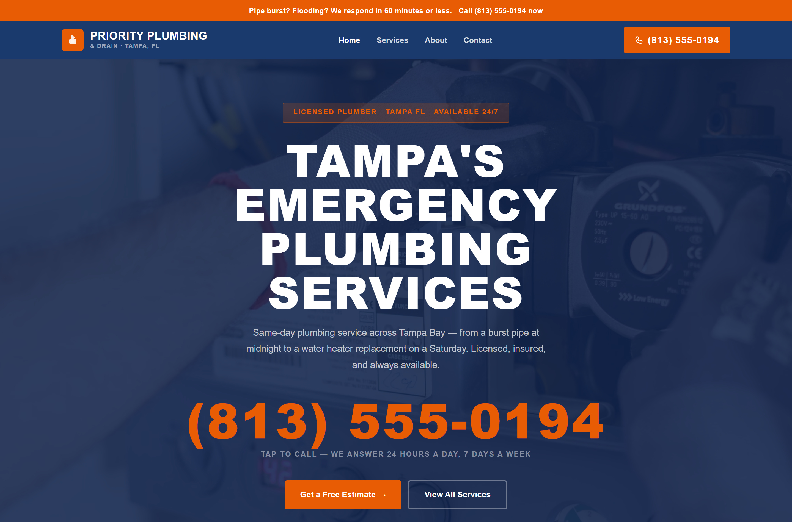

Plumbers need just 21 reviews to enter the local 3-pack, but 1,621 or more to dominate it, one of the widest gaps of any trade category, according to an analysis of 50.4 million local search results across nearly 2,000 business categories (Local Falcon, 2025). Getting in is fast. Owning the top spot is a multi-year effort.
Plumbing searches split into two very different moments: the emergency (a burst pipe, an overflowing toilet, no hot water) and the planned project (a repipe, a water heater upgrade, fixture installation). Both route through the same GBP and website, but the emergency side is what makes plumbing SEO different from a typical local trade.
Key Takeaways
- Plumbers need 21 reviews to enter the 3-pack, but 1,621+ to dominate it (Local Falcon, 2025).
- Emergency and planned-project searches are different intents that both need to be covered.
- Google's own guidance: complete, accurate profiles are more likely to show up in local search at all.
What Actually Drives Plumber Rankings?
The same three fundamentals apply here as any local trade: a complete Google Business Profile, consistent recent reviews, and dedicated service pages. Google's own guidance is direct: businesses with complete and accurate information are more likely to show up in local search results, and inaccurate info can keep a listing from appearing at all (Google Business Profile Help).
What's specific to plumbing is how much weight "24/7 availability" and response speed carry. A profile and website that clearly signal round-the-clock emergency service, hours marked accurately, "same-day" or "60-minute response" stated up front, are answering the exact question an anxious homeowner is asking before they've even finished typing the search.

A CopperBuilds plumbing build: the phone number is the biggest element on the page, on purpose.
Why Is the Review Gap So Wide for Plumbers?
Twenty-one reviews to enter the 3-pack versus 1,621+ to dominate it is a bigger spread than most trades. The practical reading: a new or small plumbing business can realistically compete for local pack visibility within months, but climbing to the top position against established competitors takes years of consistent, ongoing review generation, not a single push.
Recency matters more than raw total at every stage of that climb. A business adding 3-4 new reviews every month consistently outranks a competitor sitting on a larger but stagnant total from years ago.
Why Does Every Plumbing Service Need Its Own Page?
A homepage listing "drain cleaning, water heater repair, leak detection, repiping" in one paragraph won't rank for any of those searches individually. A dedicated page built specifically around "water heater repair," with real detail and a specific CTA, will consistently outrank a homepage that mentions it in passing.
At minimum: emergency plumbing, drain cleaning, water heater service, leak detection, and repiping each deserve their own page. Service-area pages compound this further for plumbers covering a wide metro region.
Should Plumbers Run Local Services Ads?
Yes, alongside SEO, not instead of it. Google Local Services Ads charge per verified lead rather than per click, and carry the "Google Guaranteed" badge, a real trust signal for a homeowner about to let someone into their home for an emergency repair.
The practical split: LSAs cover immediate emergency call volume while GBP and organic rankings build over the following months. As organic traffic starts carrying its own weight, ad spend can scale back without losing the call volume it was covering.
Why Do Local Citations Matter for Plumbers?
A citation is any mention of your business name, address, and phone number on another site, Yelp, Angi, HomeAdvisor, your local Chamber of Commerce. Consistency across every listing tells Google your business is real, established, and located where you say it is.
Plumbers carry a specific citation opportunity: state and local licensing board directories. A listing there works as both a citation and a trust signal, since it's third-party confirmation you're actually licensed, which matters more to a homeowner letting a stranger work on their water system than it does for most other trades.
What Technical Basics Does a Plumber's Site Need?
Three technical elements determine whether Google can fully understand a plumbing site or has to guess. Site speed matters more here than for most trades, an emergency searcher on a phone with weak signal won't wait for a slow page to load before hitting back and calling the next result. HTTPS is a baseline trust and ranking signal, not optional. Plumber (LocalBusiness) schema, structured data marking business type, address, hours, and service area, gives Google information it would otherwise have to infer from page text.
Site architecture matters too: every service page should be reachable within two or three clicks of the homepage. A visitor mid-emergency, and Google's crawler, both need to find the right page fast, not dig for it.
Does Off-Page Activity Matter for a Plumber's SEO?
Backlinks still factor into how Google judges site authority, though less heavily than GBP completeness and reviews do for a local plumbing business. The realistic sources: state and local licensing board directories, supplier or manufacturer partner pages, and your local Chamber of Commerce.
Skip paid bulk-backlink services. Google's algorithm is built to discount that kind of low-quality mass linking, and it risks doing more harm than good to a newer site's trust signals. A handful of real, relevant links beats dozens of purchased ones.
What Mistakes Are Costing Plumbers Rankings?
A few mistakes show up repeatedly in plumbing site and profile audits.
Hours that don't reflect real 24/7 availability. If you take emergency calls around the clock but your GBP hours show 9-5, Google and searchers both read that as "not actually available now," precisely when the highest-value search is happening.
No emergency-specific page. A generic "Contact Us" page doesn't answer the specific question an emergency searcher has: how fast can you get here. A dedicated emergency plumbing page addressing response time directly converts better and targets a distinct high-intent search.
Reviews going unanswered. Given how wide the 21-to-1,621 review gap is, every unanswered review is a missed chance to reinforce the responsiveness a plumbing customer specifically cares about. A prompt, professional reply signals exactly the reliability an emergency caller is trying to judge.
Do Plumbers Need to Worry About AI Search?
In December 2025, Ahrefs analyzed 300,000 keywords and found that position-1 organic click-through rates, normally 28-35%, drop to just 12-15% when Google's AI Overview appears on the same search, a 58% decline (Ahrefs, 2025). Being the answer is becoming as valuable as being the top result.
Nothing about this requires a separate strategy for a plumbing business. A direct FAQ section with schema markup, real answers to "how much does a plumber cost," "is this covered by insurance," "how fast can you get here", is the same content that helps both a human scanning search results and an AI system constructing an answer. Doing the fundamentals well already covers this.
How Long Does Plumber SEO Take to Work?
Most plumbing businesses see initial Google Maps movement within 60-90 days of consistent GBP and review work. Organic rankings for competitive terms typically take 4-6 months. Given the 21-to-1,621 review gap, the honest expectation is that entering the 3-pack is realistic within a year, but owning the top position is a multi-year commitment to consistent work, not a project with an end date.
Want a website built for the call that can't wait?
CopperBuilds builds fast, conversion-focused websites for plumbers and other trades, GBP management and review systems included in every monthly retainer.
Get a Free SEO ReviewFrequently Asked Questions
Luis builds conversion-focused websites for small businesses across the US. He's audited over 50 local service business websites and writes about what actually moves the needle on rankings and conversions.